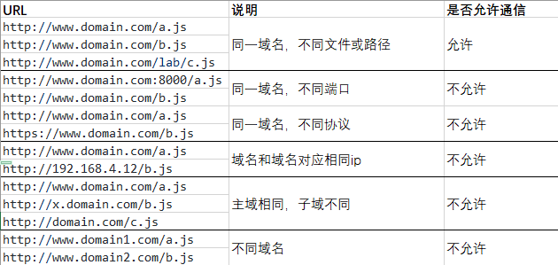

什么是跨域
跨域是指一个域下的文档或脚本试图去请求另一个域下的资源，这里跨域是广义的。
广义的跨域：
资源跳转： A链接、重定向、表单提交
资源嵌入： <link>、<script>、<img>、<frame>等dom标签，还有样式中background:url()、@font-face()等文件外链
脚本请求： js发起的ajax请求、dom和js对象的跨域操作等
其实我们通常所说的跨域是狭义的，是由浏览器同源策略限制的一类请求场景。
什么是同源策略？
同源策略/SOP（Same origin policy）是一种约定，由Netscape公司1995年引入浏览器，它是浏览器最核心也最基本的安全功能，如果缺少了同源策略，浏览器很容易受到XSS、CSFR等攻击。所谓同源是指"协议+域名+端口"三者相同，即便两个不同的域名指向同一个ip地址，也非同源。
同源策略限制以下几种行为：
Cookie、LocalStorage 和 IndexDB 无法读取
DOM 和 Js对象无法获得
AJAX 请求不能发送
常见跨域场景

跨域解决方案
1、 通过jsonp跨域window.name + iframe跨域
通过 jsonp 跨域
jsonp的原理
jsonp 就是利用<script>标签没有跨域限制的“漏洞”来达到与第三方通讯的目的。当需要通讯时，本站脚本创建一个<script>元素，地址指向第三方的API网址。形如：<script src="http://www.example.net/api?param1=1¶m2=2"></script> 。并提供一个回调函数来接收数据（函数名可约定，或通过地址参数传递）。第三方产生的响应为json数据的包装（故称之为jsonp，即json padding），形如： callback({"name":"hax","gender":"Male"})
通常为了减轻web服务器的负载，我们把js、css，img等静态资源分离到另一台独立域名的服务器上，在html页面中再通过相应的标签从不同域名下加载静态资源，而被浏览器允许，基于此原理，我们可以通过动态创建script，再请求一个带参网址实现跨域通信。
与Ajax的区别
ajax和jsonp本质上是不同的东西。
ajax的核心是通过XmlHttpRequest获取非本页内容
jsonp的核心则是动态添加标签来调用服务器提供的js脚本。
原生实现
1 2 3 4 5 6 7 8 9 10 11 12 13 <script> var script = document .createElement('script' ); script.type = 'text/javascript' ; script.src = 'http://www.domain2.com:8080/login?user=admin&callback=handleCallback' ; document .head.appendChild(script); function handleCallback (res ) alert(JSON .stringify(res)); } </script>
服务端返回如下（返回时即执行全局函数）：
1 handleCallback({"status" : true , "user" : "admin" })
jquery ajax
1 2 3 4 5 6 7 $.ajax({ url: 'http://www.domain2.com:8080/login' , type: 'get' , dataType: 'jsonp' , jsonpCallback: "handleCallback" , data: {} });
vue.js
1 2 3 4 5 6 this .$http.jsonp('http://www.domain2.com:8080/login' , { params: {}, jsonp: 'handleCallback' }).then((res ) => { console .log(res); })
后端node.js代码实例
1 2 3 4 5 6 7 8 9 10 11 12 13 14 15 16 17 var querystring = require ('querystring' );var http = require ('http' );var server = http.createServer();server.on('request' , function (req, res ) var params = qs.parse(req.url.split('?' )[1 ]); var fn = params.callback; res.writeHead(200 , { 'Content-Type' : 'text/javascript' }); res.write(fn + '(' + JSON .stringify(params) + ')' ); res.end(); }); server.listen('8080' ); console .log('Server is running at port 8080...' );
jsonp缺点：只能实现get一种请求。
document.domain + iframe跨域
此方案仅限主域相同，子域不同的跨域应用场景。
实现原理：两个页面都通过js强制设置document.domain为基础主域，就实现了同域。
父窗口http://www.domain.com/a.html
1 2 3 4 5 <iframe id ="iframe" src ="http://child.domain.com/b.html" > </iframe > <script > document .domain = 'domain.com' ; var user = 'admin' ; </script >
子窗口http://child.domain.com/b.html
1 2 3 4 5 <script > document .domain = 'domain.com' ; alert('get js data from parent ---> ' + window .parent.user); </script >
location.hash + iframe
实现原理： a欲与b跨域相互通信，通过中间页c来实现。 三个页面，不同域之间利用iframe的location.hash传值，相同域之间直接js访问来通信。
具体实现：A域：a.html ——> B域：b.html ——> A域：c.html，a与b不同域只能通过hash值单向通信，b与c也不同域也只能单向通信，但c与a同域，所以c可通过parent.parent访问a页面所有对象。
a.html http://www.domain1.com/a.html
1 2 3 4 5 6 7 8 9 10 11 12 13 14 <iframe id ="iframe" src ="http://www.domain2.com/b.html" style ="display:none;" > </iframe > <script > var iframe = document .getElementById('iframe' ); setTimeout (function ( iframe.src = iframe.src + '#user=admin' ; }, 1000); function onCallback (res ) alert('data from c.html ---> ' + res); } </script >
b.html http://www.domain2.com/b.html
1 2 3 4 5 6 7 8 9 <iframe id="iframe" src="http://www.domain1.com/c.html" style="display:none;" ></iframe> <script> var iframe = document .getElementById('iframe' ); window .onhashchange = function ( iframe.src = iframe.src + location.hash; }; </script>
c.html http://www.domain1.com/c.html
1 2 3 4 5 6 7 <script > window .onhashchange = function ( window .parent.parent.onCallback('hello: ' + location.hash.replace('#user=' , '' )); }; </script >
window.name属性的独特之处：name值在不同的页面（甚至不同域名）加载后依旧存在，并且可以支持非常长的 name 值（2MB）。
a.html http://www.domain1.com/a.html
1 2 3 4 5 6 7 8 9 10 11 12 13 14 15 16 17 18 19 20 21 22 23 24 25 26 27 28 29 30 31 32 33 34 35 var proxy = function (url, callback ) var state = 0 ; var iframe = document .createElement('iframe' ); iframe.src = url; iframe.onload = function ( if (state === 1 ) { callback(iframe.contentWindow.name); destoryFrame(); } else if (state === 0 ) { iframe.contentWindow.location = 'http://www.domain1.com/proxy.html' ; state = 1 ; } }; document .body.appendChild(iframe); function destoryFrame ( iframe.contentWindow.document.write('' ); iframe.contentWindow.close(); document .body.removeChild(iframe); } }; proxy('http://www.domain2.com/b.html' , function (data ) alert(data); });
proxy.html http://www.domain1.com/proxy.html
中间代理页，与a.html同域，内容为空即可。
b.html http://www.domain2.com/b.html
1 2 3 <script > window .name = 'This is domain2 data!' ; </script >
总结：通过iframe的src属性由外域转向本地域，跨域数据即由iframe的window.name从外域传递到本地域。这个就巧妙地绕过了浏览器的跨域访问限制，但同时它又是安全操作。
postMessage跨域
postMessage是HTML5 XMLHttpRequest Level 2中的API，且是为数不多可以跨域操作的window属性之一，它可用于解决以下方面的问题：
用法
格式 postMessage(data,origin)
data html5规范支持任意基本类型或可复制的对象，但部分浏览器只支持字符串，所以传参时最好用JSON.stringify()序列化。
origin 协议+主机+端口号，也可以设置为"*“，表示可以传递给任意窗口，如果要指定和当前窗口同源的话设置为”/"。
a.html http://www.domain1.com/a.html
1 2 3 4 5 6 7 8 9 10 11 12 13 14 15 16 <iframe id ="iframe" src ="http://www.domain2.com/b.html" style ="display:none;" > </iframe > <script > var iframe = document .getElementById('iframe' ); iframe.onload = function ( var data = { name: 'aym' }; iframe.contentWindow.postMessage(JSON .stringify(data), 'http://www.domain2.com' ); }; window .addEventListener('message' , function (e ) alert('data from domain2 ---> ' + e.data); }, false ); </script >
b.html http://www.domain2.com/b.html
1 2 3 4 5 6 7 8 9 10 11 12 13 14 <script > window .addEventListener('message' , function (e ) alert('data from domain1 ---> ' + e.data); var data = JSON .parse(e.data); if (data) { data.number = 16; window .parent.postMessage(JSON .stringify(data), 'http://www.domain1.com' ); } }, false ); </script >
跨域资源共享（CORS）
普通跨域请求：只需要服务端设置Access-Control-Allow-Origin即可，前端无须设置，若要带cookie请求：前后端都需要设置。
需注意的是：由于同源策略的限制，所读取的cookie为跨域请求接口所在域的cookie，而非当前页。如果想实现当前页cookie的写入，可参考下文：nginx反向代理中设置proxy_cookie_domain 和 NodeJs中间件代理中cookieDomainRewrite参数的设置。
目前，所有浏览器都支持该功能(IE8+：IE8/9需要使用XDomainRequest对象来支持CORS）)，CORS也已经成为主流的跨域解决方案
前端设置
1 2 xhr.withCredentials = true ;
示例代码：
1 2 3 4 5 6 7 8 9 10 11 12 13 14 var xhr = new XMLHttpRequest(); xhr.withCredentials = true ; xhr.open('post' , 'http://www.domain2.com:8080/login' , true ); xhr.setRequestHeader('Content-Type' , 'application/x-www-form-urlencoded' ); xhr.send('user=admin' ); xhr.onreadystatechange = function ( if (xhr.readyState == 4 && xhr.status == 200 ) { alert(xhr.responseText); } };
1 2 3 4 5 6 7 8 $.ajax({ ... xhrFields: { withCredentials: true }, crossDomain: true , ... });
a) axios设置：
1 axios.defaults.withCredentials = true
b) vue-resource设置：
1 Vue.http.options.credentials = true
服务端设置
若后端设置成功，前端浏览器控制台则不会出现跨域报错信息，反之，说明没设成功。
1 2 3 4 5 6 7 8 9 10 11 12 13 response.setHeader("Access-Control-Allow-Origin" , "http://www.domain1.com" ); response.setHeader("Access-Control-Allow-Credentials" , "true" ); response.setHeader("Access-Control-Allow-Headers" , "Content-Type,X-Requested-With" );
1 2 3 4 5 6 7 8 9 10 11 12 13 14 15 16 17 18 19 20 21 22 23 24 25 26 27 28 29 30 31 32 33 34 var http = require ('http' );var server = http.createServer();var qs = require ('querystring' );server.on('request' , function (req, res ) var postData = '' ; req.addListener('data' , function (chunk ) postData += chunk; }); req.addListener('end' , function ( postData = qs.parse(postData); res.writeHead(200 , { 'Access-Control-Allow-Credentials' : 'true' , 'Access-Control-Allow-Origin' : 'http://www.domain1.com' , 'Set-Cookie' : 'l=a123456;Path=/;Domain=www.domain2.com;HttpOnly' }); res.write(JSON .stringify(postData)); res.end(); }); }); server.listen('8080' ); console .log('Server is running at port 8080...' );
nginx代理跨域
nginx配置解决iconfont跨域
浏览器跨域访问js、css、img等常规静态资源被同源策略许可，但iconfont字体文件(eot|otf|ttf|woff|svg)例外，此时可在nginx的静态资源服务器中加入以下配置。
1 2 3 location / { add_header Access-Control-Allow-Origin *; }
nginx反向代理接口跨域
跨域原理： 同源策略是浏览器的安全策略，不是HTTP协议的一部分。服务器端调用HTTP接口只是使用HTTP协议，不会执行JS脚本，不需要同源策略，也就不存在跨越问题。
实现思路：通过nginx配置一个代理服务器（域名与domain1相同，端口不同）做跳板机，反向代理访问domain2接口，并且可以顺便修改cookie中domain信息，方便当前域cookie写入，实现跨域登录。
nginx具体配置：
1 2 3 4 5 6 7 8 9 10 11 12 13 14 15 server { listen 81 ; server_name www.domain1.com; location / { proxy_pass http://www.domain2.com:8080; proxy_cookie_domain www.domain2.com www.domain1.com; index index.html index.htm; add_header Access-Control-Allow-Origin http://www.domain1.com; add_header Access-Control-Allow-Credentials true ; } }
1 2 3 4 5 6 7 8 var xhr = new XMLHttpRequest();xhr.withCredentials = true ; xhr.open('get' , 'http://www.domain1.com:81/?user=admin' , true ); xhr.send();
1 2 3 4 5 6 7 8 9 10 11 12 13 14 15 16 17 18 var http = require ('http' );var server = http.createServer();var qs = require ('querystring' );server.on('request' , function (req, res ) var params = qs.parse(req.url.substring(2 )); res.writeHead(200 , { 'Set-Cookie' : 'l=a123456;Path=/;Domain=www.domain2.com;HttpOnly' }); res.write(JSON .stringify(params)); res.end(); }); server.listen('8080' ); console .log('Server is running at port 8080...' );
Nodejs中间件代理跨域
node中间件实现跨域代理，原理大致与nginx相同，都是通过启一个代理服务器，实现数据的转发，也可以通过设置cookieDomainRewrite参数修改响应头中cookie中域名，实现当前域的cookie写入，方便接口登录认证。
非vue框架的跨域（2次跨域）
利用node + express + http-proxy-middleware搭建一个proxy服务器。
1 2 3 4 5 6 7 8 var xhr = new XMLHttpRequest();xhr.withCredentials = true ; xhr.open('get' , 'http://www.domain1.com:3000/login?user=admin' , true ); xhr.send();
1 2 3 4 5 6 7 8 9 10 11 12 13 14 15 16 17 18 19 20 21 var express = require ('express' );var proxy = require ('http-proxy-middleware' );var app = express();app.use('/' , proxy({ target: 'http://www.domain2.com:8080' , changeOrigin: true , onProxyRes: function (proxyRes, req, res ) res.header('Access-Control-Allow-Origin' , 'http://www.domain1.com' ); res.header('Access-Control-Allow-Credentials' , 'true' ); }, cookieDomainRewrite: 'www.domain1.com' })); app.listen(3000 ); console .log('Proxy server is listen at port 3000...' );
Nodejs后台同（nginx）
vue框架的跨域（1次跨域）
利用node + webpack + webpack-dev-server代理接口跨域。在开发环境下，由于vue渲染服务和接口代理服务都是webpack-dev-server同一个，所以页面与代理接口之间不再跨域，无须设置headers跨域信息了。
1 2 3 4 5 6 7 8 9 10 11 12 13 14 15 16 module .exports = { entry: {}, module : {}, ... devServer: { historyApiFallback: true , proxy: [{ context: '/login' , target: 'http://www.domain2.com:8080' , changeOrigin: true , secure: false , cookieDomainRewrite: 'www.domain1.com' }], noInfo: true } }
WebSocket协议跨域
WebSocket protocol是HTML5一种新的协议。它实现了浏览器与服务器全双工通信，同时允许跨域通讯，是server push技术的一种很好的实现。我们使用Socket.io ，它很好地封装了webSocket接口，提供了更简单、灵活的接口，也对不支持webSocket的浏览器提供了向下兼容。
1 2 3 4 5 6 7 8 9 10 11 12 13 14 15 16 17 18 19 20 21 22 <div > user input：<input type ="text" > </div > <script src ="https://cdn.bootcss.com/socket.io/2.2.0/socket.io.js" > </script > <script > var socket = io('http://www.domain2.com:8080' );socket.on('connect' , function ( socket.on('message' , function (msg ) console .log('data from server: ---> ' + msg); }); socket.on('disconnect' , function ( console .log('Server socket has closed.' ); }); }); document .getElementsByTagName('input' )[0 ].onblur = function ( socket.send(this .value); }; </script >
1 2 3 4 5 6 7 8 9 10 11 12 13 14 15 16 17 18 19 20 21 22 23 24 25 26 var socket = require ('socket.io' );var server = http.createServer(function (req, res ) res.writeHead(200 , { 'Content-type' : 'text/html' }); res.end(); }); server.listen('8080' ); console .log('Server is running at port 8080...' );socket.listen(server).on('connection' , function (client ) client.on('message' , function (msg ) client.send('hello：' + msg); console .log('data from client: ---> ' + msg); }); client.on('disconnect' , function ( console .log('Client socket has closed.' ); }); });
参考
前端常见跨域解决方案 JSONP 的工作原理是什么？ - 贺师俊的回答 - 知乎
If you like this blog or find it useful for you, you are welcome to comment on it. You are also welcome to share this blog, so that more people can participate in it. If the images used in the blog infringe your copyright, please contact the author to delete them. Thank you !